コンシューマ版の地図では山、森、川等の地形が確認できましたがPC版およびHD版は海岸線のみのため、 コンシューマ版に慣れていると迷いがちですが抽選場所自体はコンシューマ版と同じと思われます。
| 海域 | 地図 | 解説 |
|---|---|---|
| 北海 | 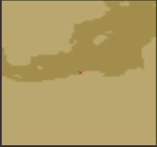 | N054-E017
コペンハーゲンの東、ストックホルムの南 |
| N057-E012
コペンハーゲンの北 |
||
| 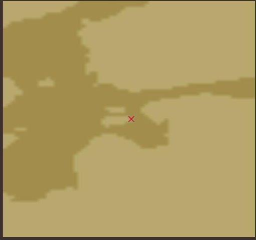 | N058-E023
リガの北 |
|
| N063-E008
オスロの北、スカンジナビア半島を西から回り込む必要あり レベルが低いと測量ができないので海岸線を注視 |
||
| 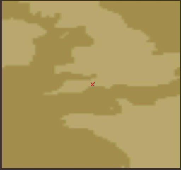 | N050-W003
ブリストルの南 |
|
| 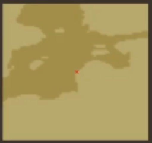 | N056-E020
リガの西 |
|
| 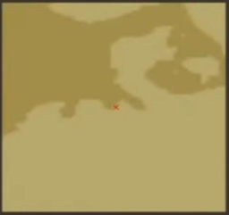 | N054-E006
ハンブルグの西、アムステルダムの東 |
|
| 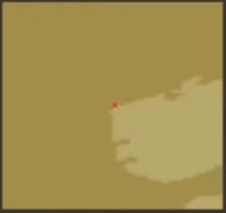 | N062-W004
アムステルダムの北 |
|
| 地中海 | N037-E007
アルジェの東、チュニスの西 |
|
| 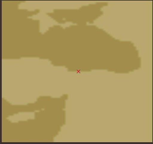 | N038-E037
黒海（イスタンブールの奥）南岸 |
|
| N038-E026
アテネの東 |
||
| N041-E039
黒海東岸 |
||
| N034-E032
キプロス島南西 |
||
| N031-E032
アレキサンドリア東、現在のスエズ運河付近 |
||
| N031-E020
トリポリの東、アレキサンドリアの西 |
||
| 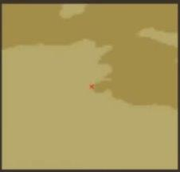 | N034-E010
チュニスの南 |
|
| アフリカ | 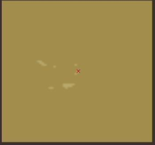 | N015-W022
ヴェルデの西 |
| 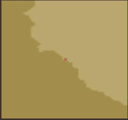 | S010-W014
シエラ＝レオネの北 |
|
| 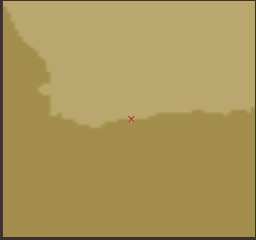 | S034-E021
ケープタウンの東 |
|
| S012-E048
マダガスカルの北東 |
||
| S007-E040
モンバサの南 |
||
| 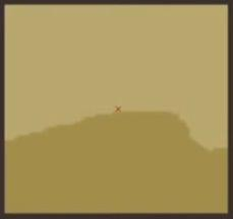 | N006-E002
サン＝ジョルジェの西 |
|
| N004-E008
サン＝トメの北 |
||
| S027-E032
ソファラの南西 |
||
| インド洋 | N012-E079
セイロンの北 |
|
| N020-E072
ディヴの東 |
||
| N013-E074
ゴアの南 |
||
 |
N025-E064
マスカットの東 |
|
| N014-E050
ソコトラの北西 |
||
| N017-E083
マスリパタムの北西 |
||
| 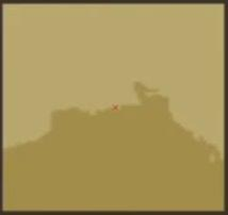 | N021-E089
カルカッタの東、河口 |
|
| 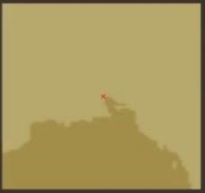 | N022-E090
カルカッタの東、湾内 |
|
| 東南アジア | S002-E126
テルナーテの南 |
|
| S002-E099
バタヴィアの北西、スマトラ島の西海岸側の島 |
||
| N012-E100
マラッカの北、ギアデインの西 マレー半島の付け根、チャオプラヤー川河口の東 |
||
| 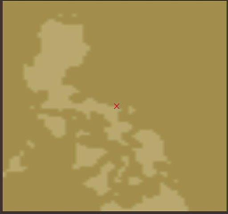 | N014-E123
マニラの東 ルソン島を回り込む必要がある、南東から行く方が速い |
|
| 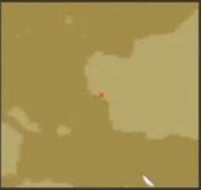 | N000-E109
パレンバンの東、ボルネオ島西海岸 |
|
| 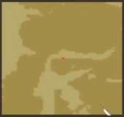 | N000-E120
メナド西、マカッサル北、ミナハサ半島の付け根 |
|
| N007-E123
マニラ南、ミンダナオ島サンボアンガ半島 |
||
| N012-E109
ギアデイン北東 |
||
| 東アジア | 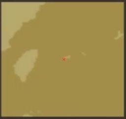 | N024-E124
泉州東、石垣島付近 |
| N038-E118
沂州の北、山東半島を東から回り込んで渤海へ |
||
| 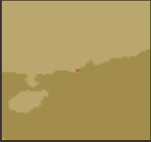 | N021-E112
マカオの西 |
|
| N040-E121
沂州の北東、漢城の北西 渤海の遼東半島側 |
||
| N027-E129
那覇北東、徳之島付近 |
||
| 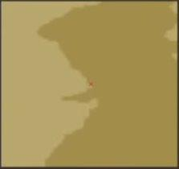 | N031-E122
杭州北東 |
|
| N037-E129
長崎北、朝鮮半島東岸 |
||
| 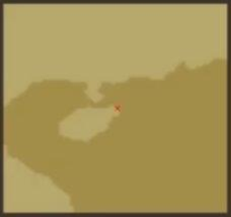 |
マカオ南西、海南島北東部 |
|
| 新大陸 | 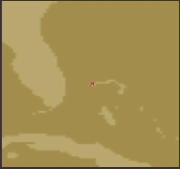 | N026-W078
ハバナの北東 |
| N017-W088
トルヒーヨの北西 |
||
| 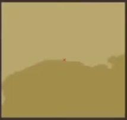 | N029-W092
メリダ北西、ラファエル編ならペンサコラ西 |
|
| N011-W073
ポルトベロ東、マラカイボ西 |
||
| 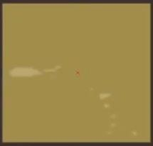 | N018-W063
サン＝ファン東 |
|
| N025-W097
ヴェラクルス北、川の南 |
||
| N009-W082
ポルトベロ西、下記地図と混同しやすいので注意 |
||
| 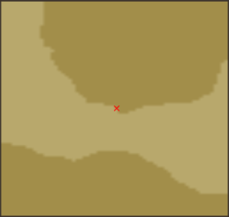 |
ヴェラクルス南東、上記地図と紛らわしいので注意 |